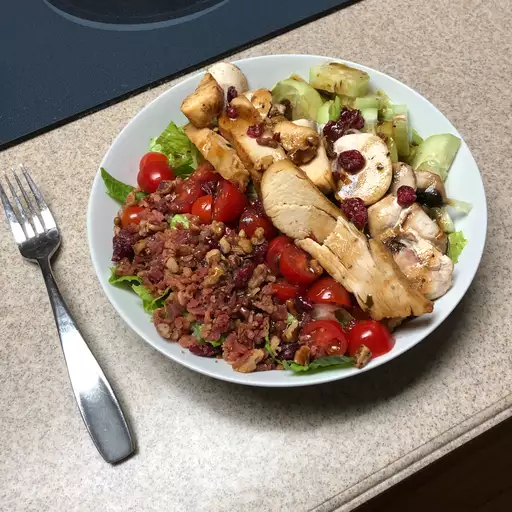

Cobb Salad

Description
The Cobb salad is an American garden salad. This salad contains tomatoes, eggs, chicken, blue cheese and avocado.
Ingredients
- 6 slices bacon
- 3 eggs
- 1 head iceberg lettuce, shredded
- 3 cups chopped, cooked chicken meat
- 2 tomatoes, seeded and chopped
- ¾ cup blue cheese, crumbled
- 3 green onions, chopped
- 1 avocado - peeled, pitted and diced
- 1 (8 ounce) bottle Ranch-style salad dressing
Steps
- Place eggs in a saucepan and cover completely with cold water; bring to a boil, then cover and remove from heat.
- Let eggs sit for 10 to 12 minutes, then cool, peel and chop.
- While the eggs are cooking, place bacon in a large, deep skillet. Cook over medium-high heat until evenly brown, 7 to 10 minutes.
- Drain, crumble, and set aside.
- Divide shredded lettuce among individual plates. Top with rows of bacon, eggs, chicken, tomatoes, blue cheese, green onions, and avocado.
- Drizzle with dressing.
Return Home